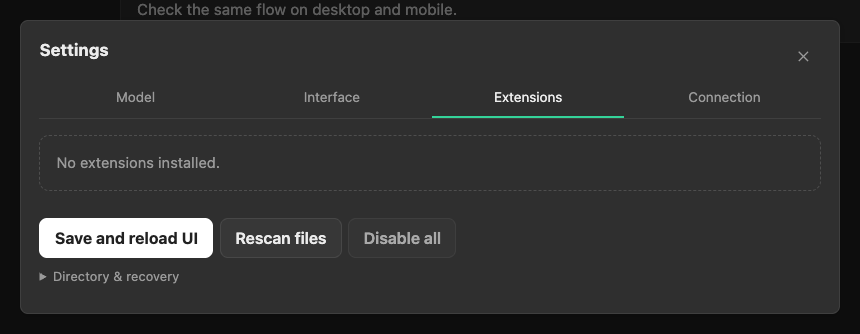
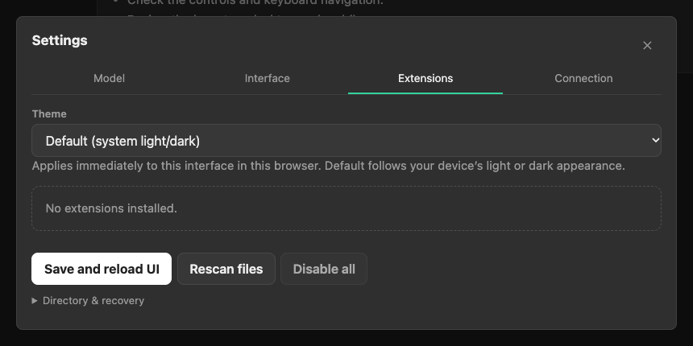
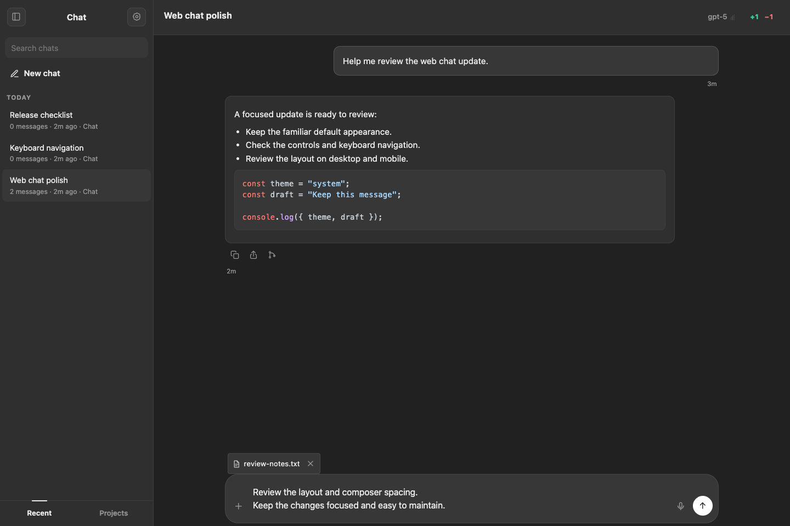
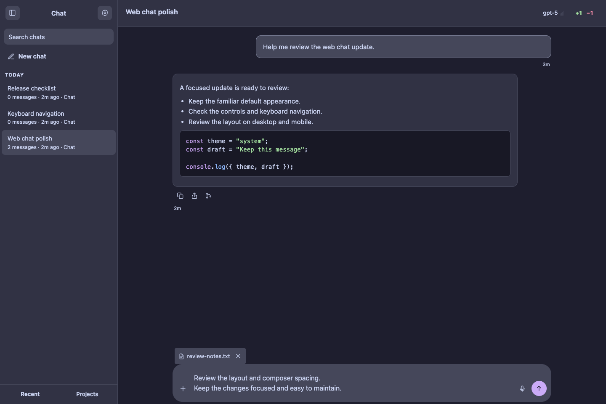
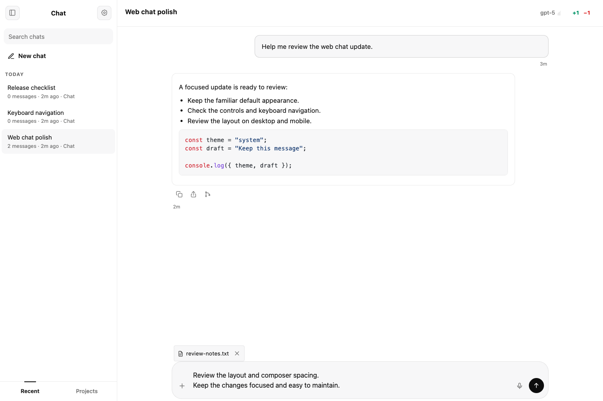
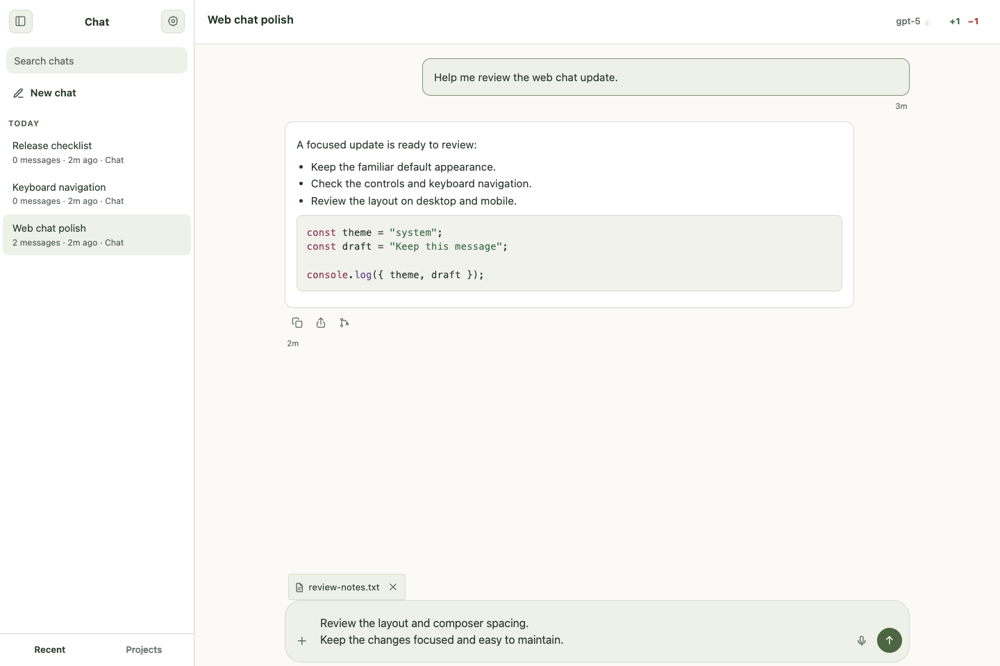
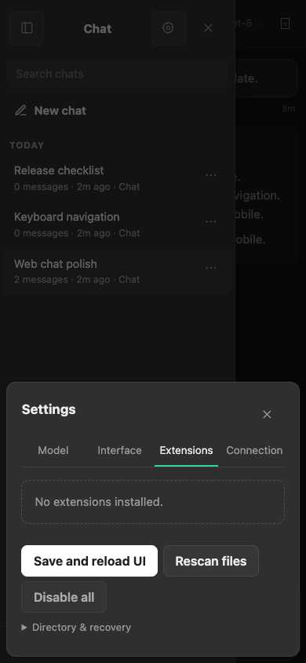
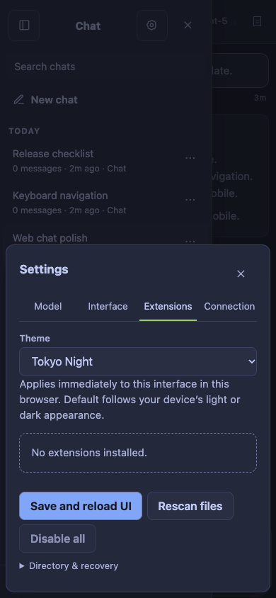

Four comparisons from upstream/main at 2b1d44f9 to the independent branch codex/chat-theme-picker. Default light and dark colors remain unchanged. Theme previews show explicit selections. Click any screenshot for the full-size original.
A built-in Theme field is now available in Extensions. Default follows the device’s original light/dark appearance.


An opt-in palette for chat, composer, and code. The after view has Catppuccin Mocha selected.


A softer opt-in light palette. The after view has Sage Light selected.


The same picker applies immediately on mobile. The after view has Tokyo Night selected.

